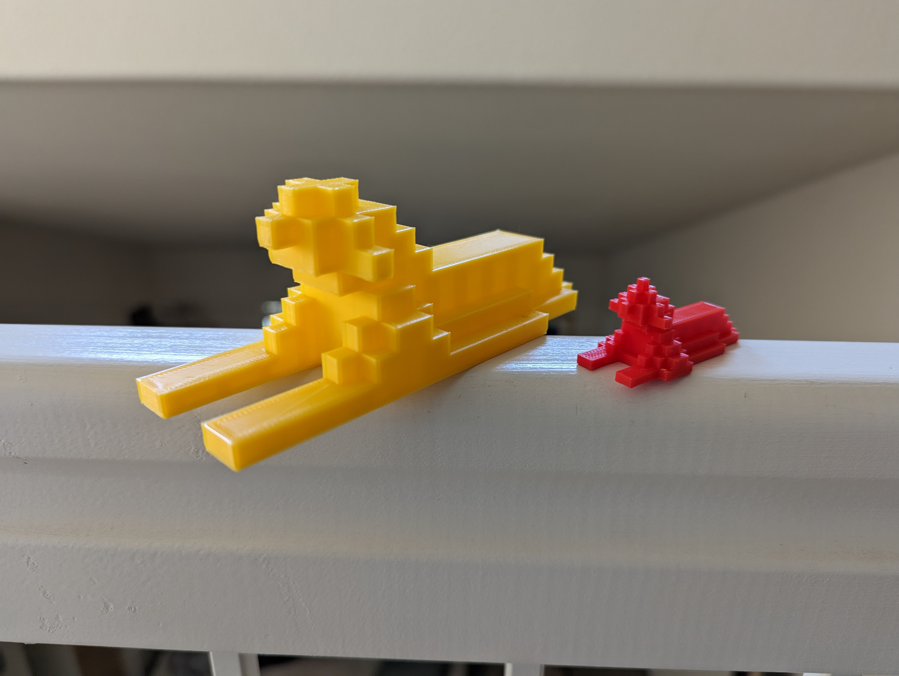

This set was created specifically to create discourse about the rise of technology and how it has contributed to consumerism. These visuals were created through the corruption of the image files with the help of programs such as Notepad++ and Audacity.
